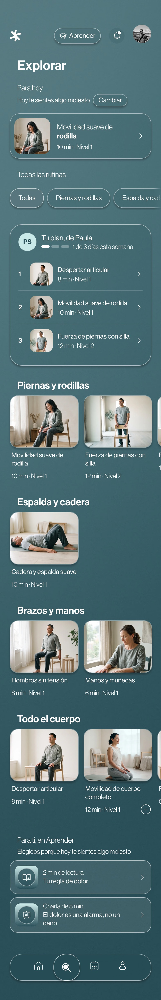

<title>Works, siete mejoras</title>
<meta name="viewport" content="width=device-width, initial-scale=1">
<meta name="claude:viewport-fit-sides" content="cover">
<link rel="preconnect" href="https://fonts.googleapis.com">
<link rel="preconnect" href="https://fonts.gstatic.com" crossorigin>
<link rel="stylesheet" href="https://fonts.googleapis.com/css2?family=Geist:wght@400;500;600&family=Geist+Mono:wght@400&display=swap">
<style>
    /* La sección Works completa con la Portada elegida y siete mejoras aplicadas. Marco C · Índice (Geist, Geist Mono,
       negro y grises, verde solo para "en línea"); la identidad de cada proyecto vive adentro de su portada.
       Grilla de 12 columnas con el margen del home */
    :root {
        --negro: #0B0B0B; --grafito: #1A1A19; --gris-oscuro: #3A3A38; --gris-medio: #8E8E8B; --gris-claro: #D9D9D6; --blanco: #F5F5F3;
        --texto-2: rgba(245, 245, 243, 0.66); --texto-3: rgba(245, 245, 243, 0.42); --linea: rgba(245, 245, 243, 0.14);
        --vivo: #3FCF8E; --nota: #E9C46A;
        --lf: #0F2A2D; --tp: #2D2560; --tp-2: #4A3CAE; --tp-3: #6B5CE7; --md-2: #577A80; --md-3: #91BABE;
        --sans: 'Geist', system-ui, sans-serif; --mono: 'Geist Mono', ui-monospace, monospace;
        --margen: clamp(16px, 2.2vw, 32px); --medianil: 16px;
        --ease: cubic-bezier(0.16, 1, 0.3, 1); --morph: cubic-bezier(0.76, 0, 0.24, 1);
        color-scheme: dark;
    }
    * { box-sizing: border-box; }
    html, body { overflow-x: clip; }
    body { margin: 0; background: var(--negro); color: var(--blanco); font: 15px / 1.5 var(--sans); -webkit-font-smoothing: antialiased; }
    a, button { font: inherit; color: inherit; }
    :focus-visible { outline: 2px solid var(--blanco); outline-offset: 3px; }
    img { display: block; max-width: 100%; }
    .mono { font: 400 12px / 1.4 var(--mono); letter-spacing: 0.01em; }
    .gris { color: var(--texto-3); }
    .grilla { display: grid; grid-template-columns: repeat(12, minmax(0, 1fr)); column-gap: var(--medianil); padding-left: max(var(--margen), env(safe-area-inset-left, 0px)); padding-right: max(var(--margen), env(safe-area-inset-right, 0px)); }
    /* Etiqueta de mejora sobre la demo: dice qué cambio se ve en ese punto */
    .tag { display: inline-flex; align-items: center; gap: 6px; padding: 3px 8px; border: 1px dashed var(--nota); border-radius: 6px; color: var(--nota); font: 400 11px var(--mono); white-space: nowrap; }

    /* =======================================================
       PRESENTACIÓN: AUDITORÍA, REFERENCIAS Y MEJORAS
       ======================================================= */
    .intro { padding-block: 56px 44px; row-gap: 26px; background: var(--gris-claro); color: #3A3A38; }
    .intro .rot { grid-column: 1 / span 3; color: #6A6A66; padding-top: 0.5em; }
    .intro h1 { grid-column: 4 / -1; margin: 0; color: var(--negro); font: 500 clamp(30px, 3.4vw, 52px) / 1.02 var(--sans); letter-spacing: -0.045em; text-wrap: balance; }
    .intro .hallazgos { grid-column: 4 / span 8; display: grid; gap: 10px; margin: 0; padding: 0; list-style: none; }
    .intro .hallazgos li { display: grid; grid-template-columns: 26px 1fr; font-size: 15px; line-height: 1.45; }
    .intro b { font-weight: 500; color: var(--negro); }
    .refs { padding-block: 40px; row-gap: 16px; background: #E6E6E3; color: #3A3A38; }
    .refs .rot { grid-column: 1 / span 3; color: #6A6A66; }
    .refs ul { grid-column: 4 / -1; display: grid; grid-template-columns: repeat(3, minmax(0, 1fr)); gap: 10px; margin: 0; padding: 0; list-style: none; }
    .refs li { display: flex; flex-direction: column; gap: 6px; padding: 16px; border-radius: 12px; background: #F5F5F3; box-shadow: inset 0 0 0 1px rgba(11, 11, 11, 0.07); }
    .refs a { color: var(--negro); font: 500 17px var(--sans); letter-spacing: -0.02em; text-decoration: none; }
    .refs a::after { content: ' ↗'; color: #8E8E8B; }
    @media (hover: hover) { .refs a:hover { text-decoration: underline; text-underline-offset: 3px; } }
    .refs p { margin: 0; color: #55554F; font-size: 14px; line-height: 1.45; }
    .refs .m { color: #8C6A12; }
    .mejoras { padding-block: 40px 56px; row-gap: 16px; background: #F0F0ED; color: #3A3A38; }
    .mejoras .rot { grid-column: 1 / span 3; color: #6A6A66; }
    .mejoras ol { grid-column: 4 / -1; display: grid; grid-template-columns: repeat(2, minmax(0, 1fr)); gap: 10px 24px; margin: 0; padding: 0; list-style: none; }
    .mejoras li { display: grid; grid-template-columns: 34px 1fr; gap: 2px 0; padding: 14px 0; border-top: 1px solid rgba(11, 11, 11, 0.1); }
    .mejoras li > span { grid-row: span 2; color: #8C6A12; font: 400 12px var(--mono); padding-top: 3px; }
    .mejoras strong { color: var(--negro); font: 500 16px / 1.3 var(--sans); letter-spacing: -0.015em; }
    .mejoras p { margin: 0; color: #55554F; font-size: 14px; line-height: 1.45; }
    .mejoras .ver { grid-column: 4 / -1; margin-top: 8px; color: var(--negro); }

    /* =======================================================
       M5 · BARRA DEL SITIO LEGIBLE
       ======================================================= */
    /* Hoy la barra fija es transparente y su texto se monta sobre las piezas del archivo. Aquí toma un velo con blur
       apenas hay contenido debajo, y se esconde al bajar como en el caso Tap In */
    .barra { position: sticky; top: env(safe-area-inset-top, 0px); z-index: 40; display: grid; grid-template-columns: 1fr auto 1fr; align-items: center; height: 52px; padding-left: max(var(--margen), env(safe-area-inset-left, 0px)); padding-right: max(var(--margen), env(safe-area-inset-right, 0px)); transition: background-color 200ms, translate 260ms var(--ease), box-shadow 200ms; }
    .barra.velo { background: rgba(11, 11, 11, 0.72); backdrop-filter: blur(16px) saturate(1.2); -webkit-backdrop-filter: blur(16px) saturate(1.2); box-shadow: 0 1px 0 var(--linea); }
    .barra.oculta { translate: 0 -100%; }
    .barra .logo { font: 500 15px var(--sans); letter-spacing: -0.03em; }
    .barra ul { display: flex; gap: 24px; margin: 0; padding: 0; list-style: none; font-size: 14px; color: var(--texto-2); }
    .barra .der { justify-self: end; display: flex; align-items: center; gap: 12px; }
    .barra .der .reloj::before { content: ''; display: inline-block; width: 6px; height: 6px; margin-right: 8px; border-radius: 50%; background: var(--vivo); vertical-align: 1px; }

    /* =======================================================
       M1 · APERTURA CON ÍNDICE
       ======================================================= */
    /* La palabra gigante ocupaba una pantalla entera. Ahora la frase de valor es el titular y el índice de los tres
       destacados es una tabla que navega: proyecto, disciplinas, año y estado */
    .ap { padding-block: clamp(88px, 11vw, 160px) clamp(48px, 6vw, 88px); row-gap: 40px; }
    .ap .rot { grid-column: 1 / span 3; display: flex; flex-direction: column; gap: 10px; padding-top: 0.7em; }
    .ap h2 { grid-column: 4 / -1; margin: 0; font: 500 clamp(36px, 4.6vw, 80px) / 0.98 var(--sans); letter-spacing: -0.05em; text-wrap: balance; }
    .ap h2 span { color: var(--texto-3); }
    .indice { grid-column: 4 / -1; margin: 0; padding: 0; list-style: none; border-top: 1px solid var(--linea); }
    .indice a { display: grid; grid-template-columns: 48px minmax(0, 1.4fr) minmax(0, 1.6fr) 90px minmax(0, 1fr) 24px; align-items: baseline; gap: 12px; padding: 18px 0 16px; border-bottom: 1px solid var(--linea); text-decoration: none; transition: padding 200ms var(--ease), color 200ms; }
    .indice b { font: 500 clamp(22px, 2vw, 32px) / 1 var(--sans); letter-spacing: -0.04em; }
    .indice i { font-style: normal; color: var(--texto-3); transition: transform 200ms var(--ease), color 200ms; }
    .indice .vivo { color: var(--blanco); }
    .indice .vivo::before { content: ''; display: inline-block; width: 6px; height: 6px; margin-right: 8px; border-radius: 50%; background: var(--vivo); box-shadow: 0 0 0 3px rgba(63, 207, 142, 0.18); vertical-align: 1px; }
    .indice .arch b { color: var(--texto-2); }
    @media (hover: hover) {
        .indice:has(a:hover) a:not(:hover) { color: var(--texto-3); }
        .indice a:hover { padding-left: 10px; } .indice a:hover i { color: var(--blanco); transform: translate(2px, 2px); }
    }

    /* =======================================================
       M2 a M4 Y M7 · PORTADAS
       ======================================================= */
    /* Cada proyecto es una portada a pantalla completa con su mundo; la siguiente se destapa desde abajo. Encima, el
       marco: nombre entero, una cifra protagonista (M3), los capítulos Marca, Web y En uso (M2) y una regla de avance
       única con teclas 1, 2 y 3 (M4). Al final el archivo sube como una hoja sobre la última portada (M7) */
    .pista { position: relative; height: 440svh; }
    .fijo { position: sticky; top: 0; height: 100svh; overflow: hidden; background: var(--negro); }
    .cov { --r: 1; --sale: 0; position: absolute; inset: 0; clip-path: inset(calc((1 - var(--r)) * 100%) 0 0 0); }
    .mundo { position: absolute; inset: 0; transform: scale(calc(1 - var(--sale) * 0.06)); transform-origin: 50% 0%; filter: brightness(calc(1 - var(--sale) * 0.55)); }
    .cov[data-i="0"] .mundo { background: var(--lf); }
    .cov[data-i="0"] .mundo > img { position: absolute; inset: 0; width: 100%; height: 100%; object-fit: cover; opacity: 0.5; }
    .cov[data-i="0"] .mundo::after { content: ''; position: absolute; inset: 0; background: linear-gradient(90deg, rgba(8, 22, 24, 0.94), rgba(8, 22, 24, 0.5) 50%, rgba(8, 22, 24, 0.2)); }
    .cov[data-i="1"] .mundo { background: radial-gradient(60% 55% at 78% 22%, #8E81F5, transparent 70%), radial-gradient(120% 100% at 50% 0%, var(--tp-3), var(--tp-2) 52%, var(--tp)); }
    .cov[data-i="2"] .mundo { background: radial-gradient(70% 70% at 80% 10%, rgba(200, 228, 230, 0.7), transparent 60%), linear-gradient(120deg, #1E3C41, var(--md-2) 55%, var(--md-3)); }
    .marco { position: relative; z-index: 2; height: 100%; padding-block: 76px 104px; grid-template-rows: auto minmax(0, 1fr) auto; row-gap: 24px; }
    .tope { grid-column: 1 / -1; display: grid; grid-template-columns: subgrid; padding-bottom: 12px; border-bottom: 1px solid rgba(255, 255, 255, 0.2); color: rgba(255, 255, 255, 0.74); }
    .tope > :nth-child(1) { grid-column: 1 / span 3; } .tope > :nth-child(2) { grid-column: 4 / span 5; } .tope > :nth-child(3) { grid-column: 9 / -1; justify-self: end; }
    .tope .vivo::before { content: ''; display: inline-block; width: 6px; height: 6px; margin-right: 8px; border-radius: 50%; background: var(--vivo); vertical-align: 1px; }
    .txt { grid-column: 1 / span 5; grid-row: 3; display: flex; flex-direction: column; align-items: flex-start; gap: 18px; translate: 0 calc((1 - var(--r)) * 60px); }
    .txt h3 { margin: 0; font: 500 clamp(56px, 6.4vw, 120px) / 0.86 var(--sans); letter-spacing: -0.06em; }
    .txt > p { margin: 0; max-width: 32ch; font: 400 clamp(16px, 1.25vw, 20px) / 1.38 var(--sans); letter-spacing: -0.01em; color: rgba(255, 255, 255, 0.84); }
    /* M3 · Una cifra protagonista, con su etiqueta en mono */
    .cifra { display: flex; align-items: baseline; gap: 14px; padding-top: 14px; border-top: 1px solid rgba(255, 255, 255, 0.2); }
    .cifra b { font: 500 clamp(30px, 2.8vw, 46px) / 1 var(--sans); letter-spacing: -0.05em; }
    .cifra span { max-width: 22ch; color: rgba(255, 255, 255, 0.72); font: 400 12px / 1.35 var(--mono); }
    .caso { display: inline-flex; align-items: center; gap: 10px; padding: 12px 20px; border-radius: 999px; background: var(--blanco); color: var(--negro); font: 500 14px var(--sans); text-decoration: none; transition: gap 200ms var(--ease); }
    .caso i { font-style: normal; transition: transform 200ms var(--ease); }
    @media (hover: hover) { .caso:hover { gap: 14px; } .caso:hover i { transform: translateX(2px); } }
    /* M2 · Capítulos: la misma portada muestra la marca, el sitio y la pieza en uso */
    .lado { grid-column: 6 / -1; grid-row: 2 / span 2; display: grid; grid-template-rows: auto minmax(0, 1fr); row-gap: 14px; min-height: 0; translate: 0 calc((1 - var(--r)) * 12svh); }
    .caps { justify-self: end; display: flex; gap: 2px; padding: 3px; border-radius: 999px; background: rgba(0, 0, 0, 0.32); backdrop-filter: blur(10px); -webkit-backdrop-filter: blur(10px); }
    .caps button { min-height: 32px; padding: 0 14px; border: 0; border-radius: 999px; background: transparent; color: rgba(255, 255, 255, 0.74); font: 400 12px var(--mono); cursor: pointer; transition: background-color 160ms, color 160ms; }
    .caps button[aria-selected="true"] { background: #FFFFFF; color: var(--negro); }
    @media (hover: hover) { .caps button[aria-selected="false"]:hover { color: #FFFFFF; } }
    .vistas { position: relative; min-height: 0; }
    .vista { position: absolute; inset: 0; display: grid; place-items: center; opacity: 0; scale: 0.98; transition: opacity 260ms var(--ease), scale 260ms var(--ease); pointer-events: none; }
    .vista.on { opacity: 1; scale: 1; pointer-events: auto; }
    .vista .marca-g { width: min(70%, 520px); aspect-ratio: 3.4 / 1; color: #FFFFFF; }
    .vista .foto { width: 100%; height: 100%; object-fit: cover; border-radius: 14px; box-shadow: 0 50px 90px -40px rgba(0, 0, 0, 0.8); }
    .marca-g, .marca-s { display: block; background: currentColor; -webkit-mask: var(--svg) center / contain no-repeat; mask: var(--svg) center / contain no-repeat; }
    .nav-v { display: flex; flex-direction: column; width: 100%; height: 100%; overflow: hidden; border-radius: 12px; background: #FFFFFF; box-shadow: 0 0 0 1px rgba(255, 255, 255, 0.08), 0 50px 90px -40px rgba(0, 0, 0, 0.8); }
    .nav-v .barra-n { flex: none; display: flex; align-items: center; gap: 6px; height: 30px; padding: 0 12px; background: #EDEDEA; }
    .nav-v .barra-n i { width: 9px; height: 9px; border-radius: 50%; background: #CFCFCB; }
    .nav-v .barra-n span { margin: 0 auto; padding: 3px 28px; border-radius: 6px; background: #FFFFFF; color: #6A6A66; font: 400 11px var(--mono); }
    .pant { position: relative; flex: 1; min-height: 0; overflow: hidden; }
    .pant img { position: absolute; inset: 0; width: 100%; height: 100%; object-fit: cover; object-position: 50% 0%; }
    .recorre { animation: recorre var(--dura, 18s) cubic-bezier(0.45, 0, 0.55, 1) infinite alternate; }
    @keyframes recorre { 0%, 8% { object-position: 50% 0%; } 92%, 100% { object-position: 50% 100%; } }
    .tel { position: relative; height: 100%; aspect-ratio: 9 / 19.5; padding: 1.4%; border-radius: 15% / 7%; background: linear-gradient(150deg, #5B6A6C, #1F2A2C 22%, #3A4749 52%, #131B1C 78%, #48585A); box-shadow: inset 0 0 0 1px rgba(255, 255, 255, 0.18), 0 50px 90px -40px rgba(0, 0, 0, 0.8); }
    .tel .pant { position: absolute; inset: 1.4%; border: 3px solid #050708; border-radius: 13.5% / 6.3%; background: #577A80; }
    /* M4 · Regla de avance: una sola, en el marco, en vez de la mini navegación repetida en cada panel */
    .regla { position: absolute; z-index: 5; left: 50%; bottom: 28px; display: flex; gap: 6px; padding: 6px; border-radius: 999px; background: rgba(0, 0, 0, 0.36); backdrop-filter: blur(12px); -webkit-backdrop-filter: blur(12px); translate: -50% 0; }
    .regla button { position: relative; display: flex; align-items: center; gap: 8px; min-height: 34px; white-space: nowrap; padding: 0 14px 0 12px; overflow: hidden; border: 0; border-radius: 999px; background: transparent; color: rgba(255, 255, 255, 0.7); font: 400 12px var(--mono); cursor: pointer; }
    .regla button::before { content: ''; position: absolute; inset: 0; border-radius: inherit; background: rgba(255, 255, 255, 0.16); transform-origin: 0 50%; transform: scaleX(var(--a, 0)); }
    .regla button > * { position: relative; }
    .regla button.on { color: #FFFFFF; }
    .regla kbd { display: grid; place-items: center; width: 18px; height: 18px; border-radius: 4px; box-shadow: inset 0 0 0 1px rgba(255, 255, 255, 0.3); font: 400 10px var(--mono); }
    .fijo > .tag { position: absolute; z-index: 6; }

    /* =======================================================
       M6 Y M7 · ARCHIVO
       ======================================================= */
    /* M7: el archivo sube como una hoja sobre la última portada, que queda fija debajo. M6: dos vistas, la hoja de
       contactos de hoy (afinada) y una lista tipográfica; en el teléfono la tira se recorre con el dedo */
    .archivo { position: relative; z-index: 3; margin-top: -100svh; padding-block: clamp(64px, 8vw, 112px) clamp(80px, 10vw, 140px); border-radius: 24px 24px 0 0; background: var(--negro); box-shadow: 0 -40px 80px rgba(0, 0, 0, 0.5); }
    .arch-cab { row-gap: 18px; align-items: end; }
    .arch-cab h2 { grid-column: 1 / span 6; margin: 0; font: 500 clamp(48px, 7vw, 112px) / 0.9 var(--sans); letter-spacing: -0.06em; }
    .arch-cab h2 sup { margin-left: 8px; color: var(--texto-3); font: 400 13px var(--mono); letter-spacing: 0; vertical-align: top; }
    .arch-cab p { grid-column: 7 / span 4; margin: 0; color: var(--texto-2); }
    .vistas-a { grid-column: 11 / -1; justify-self: end; display: flex; gap: 2px; padding: 3px; border-radius: 999px; background: var(--grafito); }
    .vistas-a button { min-height: 32px; padding: 0 14px; border: 0; border-radius: 999px; background: transparent; color: var(--texto-2); font: 400 12px var(--mono); cursor: pointer; }
    .vistas-a button[aria-pressed="true"] { background: var(--blanco); color: var(--negro); }
    .fichas { margin: 40px 0 0; padding: 0; list-style: none; }
    .ficha { border-top: 1px solid var(--linea); }
    .ficha:last-child { border-bottom: 1px solid var(--linea); }
    .ficha > a { display: grid; grid-template-columns: repeat(12, minmax(0, 1fr)); column-gap: var(--medianil); padding: 22px max(var(--margen), env(safe-area-inset-right, 0px)) 22px max(var(--margen), env(safe-area-inset-left, 0px)); text-decoration: none; transition: opacity 200ms; }
    .f-num { grid-column: 1; padding-top: 0.5em; }
    .f-txt { grid-column: 2 / span 3; display: flex; flex-direction: column; gap: 8px; }
    .f-txt b { font: 500 24px / 1.05 var(--sans); letter-spacing: -0.035em; }
    .f-txt span { max-width: 30ch; color: var(--texto-2); font-size: 14px; line-height: 1.45; }
    .f-txt em { margin-top: 2px; color: var(--texto-3); font: normal 400 12px var(--mono); }
    .f-tira { grid-column: 5 / span 7; position: relative; height: 150px; overflow: hidden; -webkit-mask-image: linear-gradient(90deg, #000 85%, transparent); mask-image: linear-gradient(90deg, #000 85%, transparent); }
    .f-tira-in { display: flex; gap: 8px; height: 100%; will-change: transform; }
    .f-tira img { height: 100%; width: auto; border-radius: 4px; }
    .f-anio { grid-column: 12; display: flex; flex-direction: column; align-items: flex-end; gap: 4px; text-align: right; }
    @media (hover: hover) { .fichas:has(.ficha > a:hover) .ficha > a:not(:hover) { opacity: 0.4; } }
    /* Vista lista: solo tipografía, una fila por proyecto (como el archivo de Locomotive); la tira se abre al tocar */
    .fichas.lista .ficha > a { padding-block: 16px; align-items: baseline; }
    .fichas.lista .f-txt { grid-column: 2 / span 4; flex-direction: row; align-items: baseline; gap: 16px; }
    .fichas.lista .f-txt span { display: none; }
    .fichas.lista .f-txt em { grid-column: auto; }
    .fichas.lista .f-tira { display: none; }
    .fichas.lista .f-disc { display: block; }
    .f-disc { display: none; grid-column: 6 / span 4; color: var(--texto-2); }
    .fichas.lista .f-txt em { display: none; }
    .fichas.lista .f-anio { grid-column: 11 / -1; flex-direction: row; justify-content: flex-end; gap: 18px; }

    /* =======================================================
       VISTA MÓVIL
       ======================================================= */
    @media (max-width: 768px) {
        .grilla { column-gap: 10px; }
        .intro .rot, .intro h1, .intro .hallazgos, .refs .rot, .refs ul, .mejoras .rot, .mejoras ol, .mejoras .ver { grid-column: 1 / -1; }
        .refs ul, .mejoras ol { grid-template-columns: 1fr; }
        .barra ul { display: none; } .barra { grid-template-columns: 1fr auto; }
        .ap .rot, .ap h2, .indice { grid-column: 1 / -1; }
        .indice a { grid-template-columns: 30px minmax(0, 1fr) auto 20px; row-gap: 4px; }
        .indice .d { grid-column: 2 / span 2; grid-row: 2; }
        .indice .a { display: none; }
        .marco { padding-top: 64px; padding-bottom: 92px; grid-template-rows: auto minmax(0, 1fr) auto; row-gap: 16px; }
        .tope > :nth-child(2) { display: none; } .tope > :nth-child(1) { grid-column: 1 / span 6; } .tope > :nth-child(3) { grid-column: 7 / -1; }
        .lado { grid-column: 1 / -1; grid-row: 2; }
        .caps { justify-self: start; }
        .txt { grid-column: 1 / -1; gap: 12px; }
        .txt h3 { font-size: clamp(46px, 14vw, 68px); }
        .txt > p { font-size: 15px; }
        .cifra b { font-size: 28px; }
        .vista .nav-v { width: auto; height: 100%; aspect-ratio: 4 / 5; }
        .regla { bottom: 18px; gap: 2px; } .regla kbd { display: none; } .regla button { padding: 0 11px; font-size: 11px; }
        .fijo > .tag { display: none; }
        .arch-cab h2, .arch-cab p { grid-column: 1 / -1; }
        .vistas-a { grid-column: 1 / -1; justify-self: start; }
        .ficha > a { row-gap: 14px; }
        .f-num { display: none; }
        .f-txt { grid-column: 1 / span 9; }
        .f-anio { grid-column: 10 / -1; }
        .f-tira { grid-column: 1 / -1; grid-row: 2; height: 120px; overflow-x: auto; scroll-snap-type: x mandatory; scrollbar-width: none; -webkit-mask-image: linear-gradient(90deg, #000 80%, transparent); mask-image: linear-gradient(90deg, #000 80%, transparent); }
        .f-tira img { scroll-snap-align: start; }
        .fichas.lista .f-txt { grid-column: 1 / span 8; }
        .fichas.lista .f-disc { display: none; }
        .fichas.lista .f-anio { grid-column: 9 / -1; white-space: nowrap; } .fichas.lista .f-anio .gris { display: none; }
    }
    @media (prefers-reduced-motion: reduce) {
        .recorre { animation: none; }
        .vista, .barra { transition: none; }
    }
</style>

<header class="grilla intro">
    <span class="rot mono">Works · auditoría</span>
    <h1>La Portada queda. Para que toda la sección esté a su altura, siete mejoras.</h1>
    <ul class="hallazgos">
        <li><span class="mono">a</span><span><b>La apertura gasta una pantalla</b> en la palabra "works" y deja el índice en mono chico en una esquina.</span></li>
        <li><span class="mono">b</span><span><b>Cada destacado muestra solo la web.</b> La marca, que es la mitad de lo que ofreces, no se ve.</span></li>
        <li><span class="mono">c</span><span><b>No hay un dato que diga por qué importa.</b> La bajada va en gris de 11 px.</span></li>
        <li><span class="mono">d</span><span><b>La mini navegación se repite</b> dentro de cada panel, tres veces la misma información.</span></li>
        <li><span class="mono">e</span><span><b>La barra fija es transparente:</b> sobre el archivo, "About · Works · Contact" se monta encima de las piezas.</span></li>
        <li><span class="mono">f</span><span><b>El archivo es una sola vista</b> y en el teléfono la tira de piezas no tiene cómo recorrerse.</span></li>
        <li><span class="mono">g</span><span><b>El título "Archivo" entra encima de Mend</b> antes de que el último panel termine.</span></li>
    </ul>
</header>

<section class="grilla refs" aria-label="Referencias">
    <span class="rot mono">Referencias recorridas</span>
    <ul>
        <li><a href="https://order.design" target="_blank" rel="noopener">Order</a><p>Cada proyecto trae capítulos (Identidad, Estrategia, Sitio web, Movimiento) sobre la misma pieza.</p><span class="mono m">M2 · Capítulos</span></li>
        <li><a href="https://www.raggededge.com/work" target="_blank" rel="noopener">Ragged Edge</a><p>Nombre, una frase y una sola cifra grande de resultado al lado de la pieza fija.</p><span class="mono m">M3 · Una cifra</span></li>
        <li><a href="https://koto.com/work" target="_blank" rel="noopener">Koto</a><p>Un riel fijo con la ficha del proyecto en pantalla; el marco no se repite en cada pieza.</p><span class="mono m">M4 · Regla de avance</span></li>
        <li><a href="https://locomotive.ca/en/work" target="_blank" rel="noopener">Locomotive</a><p>El índice de proyectos como tabla tipográfica: nombre, sector y lugar, sin miniaturas.</p><span class="mono m">M1 y M6 · Índice y lista</span></li>
        <li><a href="https://www.instrument.com/work" target="_blank" rel="noopener">Instrument</a><p>Filtros por disciplina y un cambio de vista (Stack o Grid) para el mismo trabajo.</p><span class="mono m">M6 · Dos vistas</span></li>
        <li><a href="https://wearecollins.com/case-studies/" target="_blank" rel="noopener">Collins</a><p>Portadas donde la marca del cliente va sobre su propia imagen, y vistas Shelf y Spines.</p><span class="mono m">M2 y M6 · Marca en la portada</span></li>
    </ul>
</section>

<section class="grilla mejoras" aria-label="Mejoras">
    <span class="rot mono">Las siete mejoras</span>
    <ol>
        <li><span>M1</span><strong>Apertura con índice</strong><p>La frase de valor es el titular y los tres destacados, una tabla que navega con su estado.</p></li>
        <li><span>M2</span><strong>Capítulos en cada portada</strong><p>Marca, Web y En uso sobre la misma pieza: se ve que diseñas la marca y construyes el sitio.</p></li>
        <li><span>M3</span><strong>Una cifra protagonista</strong><p>Un solo dato con su etiqueta, sobre el botón del caso.</p></li>
        <li><span>M4</span><strong>Una regla de avance</strong><p>Reemplaza la mini navegación repetida. Teclas 1, 2 y 3, como pide la marca C · Índice.</p></li>
        <li><span>M5</span><strong>Barra legible</strong><p>Velo con blur cuando hay contenido debajo; se esconde al bajar y vuelve al subir.</p></li>
        <li><span>M6</span><strong>Archivo con dos vistas</strong><p>Hoja de contactos afinada o lista tipográfica. En el teléfono la tira se recorre con el dedo.</p></li>
        <li><span>M7</span><strong>Entrega al archivo</strong><p>El archivo sube como una hoja sobre la última portada, que queda fija debajo.</p></li>
    </ol>
    <span class="ver mono">Abajo, la sección completa con todo aplicado. Las etiquetas amarillas marcan cada mejora.</span>
</section>

<nav class="barra" data-barra aria-label="Sitio">
    <span class="logo">agustín.design</span>
    <ul><li>About</li><li>Works</li><li>Contact</li></ul>
    <span class="der"><span class="tag">M5</span><span class="mono reloj" data-reloj>Santiago 12:00</span></span>
</nav>

<main id="demo">
    <section class="grilla ap" aria-label="Apertura de Works">
        <div class="rot"><span class="mono gris">02 · Works</span><span class="mono gris">Trabajo seleccionado</span><span class="tag">M1</span></div>
        <h2>Marcas y sitios web, diseñados y construidos por mí. <span>Cada proyecto, contado desde sus decisiones.</span></h2>
        <ul class="indice">
            <li><a href="#p0" data-ir-cov="0"><span class="mono gris">01</span><b>Llegó Farma</b><span class="mono gris d">Marca · Sitio one page</span><span class="mono gris a">2026</span><span class="mono gris">Pronto en línea</span><i>↘</i></a></li>
            <li><a href="#p1" data-ir-cov="1"><span class="mono gris">02</span><b>Tap In</b><span class="mono gris d">Marca · Producto · Web</span><span class="mono gris a">2025–26</span><span class="mono vivo">tapin.cl</span><i>↘</i></a></li>
            <li><a href="#p2" data-ir-cov="2"><span class="mono gris">03</span><b>Mend</b><span class="mono gris d">Investigación · Marca · Web app</span><span class="mono gris a">2026</span><span class="mono gris">Prototipo</span><i>↘</i></a></li>
            <li class="arch"><a href="#archivo"><span class="mono gris">→</span><b>Archivo</b><span class="mono gris d">Editorial, identidad y producto</span><span class="mono gris a">2022–25</span><span class="mono gris">5 proyectos</span><i>↘</i></a></li>
        </ul>
    </section>

    <section class="pista" data-pista aria-label="Destacados">
        <div class="fijo">
            <article class="cov" data-i="0" id="p0">
                <div class="mundo"></div>
                <div class="grilla marco">
                    <div class="tope mono"><span>01 / 03 · Llegó Farma</span><span>Marca · Sitio one page</span><span>2026 · Pronto en línea</span></div>
                    <div class="lado">
                        <div class="caps" role="tablist" aria-label="Capítulos de Llegó Farma"><button type="button" role="tab" aria-selected="false" data-cap="0">Marca</button><button type="button" role="tab" aria-selected="true" data-cap="1">Web</button><button type="button" role="tab" aria-selected="false" data-cap="2">En uso</button></div>
                        <div class="vistas">
                            <div class="vista"><span class="marca-g" style="--svg:url('llego-logo.svg')" role="img" aria-label="Llegó Farma"></span></div>
                            <div class="vista on"><div class="nav-v"><div class="barra-n"><i></i><i></i><i></i><span>llegofarma.cl</span></div><div class="pant"></div></div></div>
                            <div class="vista"></div>
                        </div>
                    </div>
                    <div class="txt">
                        <h3>Llegó Farma</h3>
                        <p>Submarca de logística farmacéutica: identidad, manual y sitio, diseñados y construidos por mí.</p>
                        <div class="cifra"><b>Pitch ganado</b><span>al diseñador que ya tenía la marca madre</span></div>
                        <a class="caso" href="#demo">Ver caso <i>→</i></a>
                    </div>
                </div>
            </article>
            <article class="cov" data-i="1" id="p1">
                <div class="mundo"></div>
                <div class="grilla marco">
                    <div class="tope mono"><span>02 / 03 · Tap In</span><span>Marca · Producto · Web</span><span class="vivo">2025–26 · tapin.cl</span></div>
                    <div class="lado">
                        <div class="caps" role="tablist" aria-label="Capítulos de Tap In"><button type="button" role="tab" aria-selected="false" data-cap="0">Marca</button><button type="button" role="tab" aria-selected="true" data-cap="1">Web</button><button type="button" role="tab" aria-selected="false" data-cap="2">En uso</button></div>
                        <div class="vistas">
                            <div class="vista"><span class="marca-g" style="--svg:url('tp-wordmark.svg')" role="img" aria-label="Tap In"></span></div>
                            <div class="vista on"><div class="nav-v"><div class="barra-n"><i></i><i></i><i></i><span>tapin.cl</span></div><div class="pant"></div></div></div>
                            <div class="vista"></div>
                        </div>
                    </div>
                    <div class="txt">
                        <h3>Tap In</h3>
                        <p>De la cafetería del campus a la plataforma del colegio. La marca desde el día uno y su web, programada por mí.</p>
                        <div class="cifra"><b>+15.000</b><span>familias en Connect, en Chile y Perú</span></div>
                        <a class="caso" href="#demo">Ver caso <i>→</i></a>
                    </div>
                </div>
            </article>
            <article class="cov" data-i="2" id="p2">
                <div class="mundo"></div>
                <div class="grilla marco">
                    <div class="tope mono"><span>03 / 03 · Mend</span><span>Investigación · Marca · Web app</span><span>2026 · Prototipo con acceso</span></div>
                    <div class="lado">
                        <div class="caps" role="tablist" aria-label="Capítulos de Mend"><button type="button" role="tab" aria-selected="false" data-cap="0">Marca</button><button type="button" role="tab" aria-selected="true" data-cap="1">App</button><button type="button" role="tab" aria-selected="false" data-cap="2">Inicio</button></div>
                        <div class="vistas">
                            <div class="vista"><span class="marca-g" style="--svg:url('mend-logo.svg')" role="img" aria-label="Mend salud"></span></div>
                            <div class="vista on"><div class="tel"><div class="pant"></div></div></div>
                            <div class="vista"><div class="tel"><div class="pant"></div></div></div>
                        </div>
                    </div>
                    <div class="txt">
                        <h3>Mend</h3>
                        <p>Salud articular para Atención Primaria, de la investigación al producto. Marca y web app construidas por mí.</p>
                        <div class="cifra"><b>En testeo</b><span>con pacientes de Atención Primaria</span></div>
                        <a class="caso" href="#demo">Ver caso <i>→</i></a>
                    </div>
                </div>
            </article>
            <span class="tag" style="left:max(var(--margen),env(safe-area-inset-left,0px));top:118px">M2 · M3 · M4</span>
            <nav class="regla" aria-label="Destacados">
                <button type="button" data-ir-cov="0" class="on"><kbd>1</kbd><span>Llegó Farma</span></button>
                <button type="button" data-ir-cov="1"><kbd>2</kbd><span>Tap In</span></button>
                <button type="button" data-ir-cov="2"><kbd>3</kbd><span>Mend</span></button>
            </nav>
        </div>
    </section>

    <section class="archivo" id="archivo" aria-label="Archivo">
        <div class="grilla arch-cab">
            <h2>Archivo<sup>(05)</sup></h2>
            <p>Proyectos anteriores. Editorial, identidad y producto, de 2022 a 2025. <span class="tag">M6 · M7</span></p>
            <div class="vistas-a" role="group" aria-label="Vista del archivo"><button type="button" data-vista="hoja" aria-pressed="true">Hoja</button><button type="button" data-vista="lista" aria-pressed="false">Lista</button></div>
        </div>
        <ul class="fichas" data-fichas></ul>
    </section>
</main>

<script>
/* =======================================================
   INICIO JS · WORKS CON LAS SIETE MEJORAS
   ======================================================= */
(() => {
    const fijar = (v, a = 0, b = 1) => Math.min(Math.max(v, a), b);
    const curva = t => t * t * (3 - 2 * t);

    /* --- 1. RELOJ DE LA BARRA --- */
    const reloj = document.querySelector('[data-reloj]');
    const hora = () => { try { reloj.textContent = 'Santiago ' + new Intl.DateTimeFormat('es-CL', { hour: '2-digit', minute: '2-digit', hour12: false, timeZone: 'America/Santiago' }).format(new Date()); } catch (e) { /* sin zona */ } };
    hora(); setInterval(hora, 30000);

    /* --- 2. ARCHIVO (DATOS REALES DEL HOME) --- */
    const ARCHIVO = [
        ['La Columna', 'Dirección de arte editorial', '2022–24', 'Sistema editorial para una columna de fútbol inglés: portadas, afiches y piezas semanales.', 'lacolumna', 11],
        ['HAI Group', 'Identidad corporativa', '2024', 'Identidad para una empresa de gestión de personas, flexible para sus cuatro líneas de servicio.', 'hai', 6],
        ['Mido', 'Marca y UI', '2024–25', 'Marca y app de domótica: un hogar que responde a quienes lo habitan.', 'mido', 7],
        ['Entrena Po', 'Identidad y redes', '2023–24', 'Identidad y sistema de contenido en Instagram para entrenamiento personalizado.', 'entrenapo', 8],
        ['Posters y afiches', 'Gráfica personal', '2022–25', 'Afiches de cine, música y fútbol. Exploración gráfica propia.', 'posters', 10]
    ];
    const fichas = document.querySelector('[data-fichas]');
    fichas.innerHTML = ARCHIVO.map(([n, d, a, c, pre, k], i) => `<li class="ficha"><a href="#archivo">
        <span class="f-num mono gris">${String(i + 1).padStart(2, '0')}</span>
        <span class="f-txt"><b>${n}</b><span>${c}</span><em>${d}</em></span>
        <span class="f-disc mono">${d}</span>
        <span class="f-tira"><span class="f-tira-in">${Array.from({ length: k }, (_, j) => ``).join('')}</span></span>
        <span class="f-anio mono"><span>${a}</span><span class="gris">${String(k).padStart(2, '0')} piezas</span></span>
    </a></li>`).join('');
    document.querySelectorAll('[data-vista]').forEach(b => b.addEventListener('click', () => {
        fichas.classList.toggle('lista', b.dataset.vista === 'lista');
        document.querySelectorAll('[data-vista]').forEach(x => x.setAttribute('aria-pressed', x === b));
    }));
    /* Con mouse, la tira se recorre siguiendo al cursor (como hoy); en el teléfono, con el dedo y snap */
    if (window.matchMedia('(hover: hover)').matches) fichas.querySelectorAll('.ficha > a').forEach(a => {
        const tira = a.querySelector('.f-tira'), interior = a.querySelector('.f-tira-in');
        let x = 0, meta = 0, corre = false;
        const paso = () => { x += (meta - x) * 0.09; interior.style.transform = `translate3d(${(-x).toFixed(1)}px,0,0)`; if (Math.abs(meta - x) > 0.3) requestAnimationFrame(paso); else corre = false; };
        const ir = v => { meta = v; if (!corre) { corre = true; requestAnimationFrame(paso); } };
        a.addEventListener('mousemove', e => { const r = tira.getBoundingClientRect(); ir(fijar((e.clientX - r.left) / r.width) * Math.max(interior.scrollWidth - tira.clientWidth + 40, 0)); });
        a.addEventListener('mouseleave', () => ir(0));
    });

    /* --- 3. CAPÍTULOS DE CADA PORTADA --- */
    document.querySelectorAll('.cov').forEach(c => {
        const tabs = [...c.querySelectorAll('[data-cap]')], vistas = [...c.querySelectorAll('.vista')];
        tabs.forEach(t => t.addEventListener('click', () => {
            tabs.forEach(x => x.setAttribute('aria-selected', x === t));
            vistas.forEach((v, k) => v.classList.toggle('on', k === +t.dataset.cap));
        }));
    });

    /* --- 4. PORTADAS: DESTAPE, REGLA Y TECLAS --- */
    /* La pista se reparte en tres tramos; la última portada queda fija mientras el archivo sube encima */
    const pista = document.querySelector('[data-pista]'), covs = [...pista.querySelectorAll('.cov')], regla = [...pista.querySelectorAll('.regla button')];
    const pintar = () => {
        const r = pista.getBoundingClientRect(), p = fijar(-r.top / (r.height - innerHeight)), s = p * 3.1;
        const rev = [1, curva(fijar((s - 0.6) / 0.6)), curva(fijar((s - 1.6) / 0.6))];
        covs.forEach((c, i) => { c.style.setProperty('--r', rev[i].toFixed(4)); c.style.setProperty('--sale', (rev[i + 1] || 0).toFixed(4)); });
        const act = rev[2] > 0.5 ? 2 : rev[1] > 0.5 ? 1 : 0;
        const tramos = [[0, 0.9], [0.9, 1.9], [1.9, 2.6]];
        regla.forEach((b, i) => { b.classList.toggle('on', i === act); b.style.setProperty('--a', fijar((s - tramos[i][0]) / (tramos[i][1] - tramos[i][0])).toFixed(3)); });
    };
    const irCov = i => { const r = pista.getBoundingClientRect(); window.scrollTo({ top: window.scrollY + r.top + ((i + (i ? 0.25 : 0)) / 3.1) * (r.height - innerHeight), behavior: 'smooth' }); };
    document.querySelectorAll('[data-ir-cov]').forEach(b => b.addEventListener('click', e => { e.preventDefault(); irCov(+b.dataset.irCov); }));
    window.addEventListener('keydown', e => {
        if (e.metaKey || e.ctrlKey || e.altKey || !['1', '2', '3'].includes(e.key)) return;
        const r = pista.getBoundingClientRect();
        if (r.bottom < 0 || r.top > innerHeight) return;
        irCov(+e.key - 1);
    });

    /* --- 5. BARRA: VELO Y ESCONDERSE AL BAJAR --- */
    const barra = document.querySelector('[data-barra]'), demo = document.getElementById('demo');
    let antes = window.scrollY, subida = 0;
    const barraPinta = () => {
        const y = window.scrollY, dy = y - antes; antes = y;
        barra.classList.toggle('velo', demo.getBoundingClientRect().top < 40);
        if (dy > 0) { subida = 0; if (demo.getBoundingClientRect().top < -120) barra.classList.add('oculta'); }
        else if (dy < 0) { subida -= dy; if (subida > 80) barra.classList.remove('oculta'); }
    };

    let pendiente = false;
    const pedir = () => { if (!pendiente) { pendiente = true; requestAnimationFrame(() => { pendiente = false; pintar(); barraPinta(); }); } };
    window.addEventListener('scroll', pedir, { passive: true });
    window.addEventListener('resize', pedir);
    pintar();
})();
/* =======================================================
   FIN JS · WORKS CON LAS SIETE MEJORAS
   ======================================================= */
</script>
